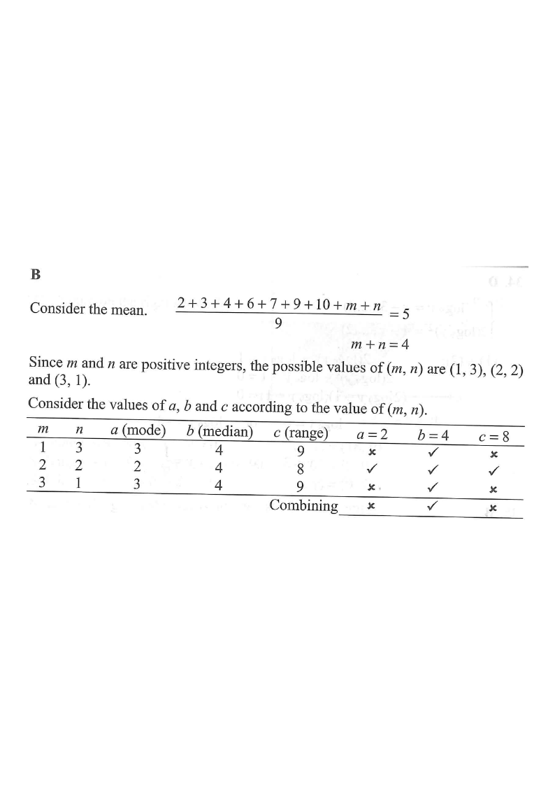

Sorted data (order matters for the median) — the highlighted step drives the figure.
Step 1 · The nine numbers: 2 3 4 6 7 9 10 m n
Topic 15 · Statistics (mean, mode, median, range)
Consider the following positive integers:
2 3 4 6 7 9 10 m n
Let $a$, $b$ and $c$ be the mode, the median and the range of the above positive integers respectively. If the mean of the above positive integers is 5, which of the following must be true?
A. I only B. II only C. I and III only D. II and III only

| $m$ | $n$ | sorted data | $a$ (mode) | $b$ (median) | $c$ (range) |
|---|---|---|---|---|---|
| 1 | 3 | 1,2,3,3,4,6,7,9,10 | 3 | 4 | 9 |
| 2 | 2 | 2,2,2,3,4,6,7,9,10 | 2 | 4 | 8 |
| 3 | 1 | 1,2,3,3,4,6,7,9,10 | 3 | 4 | 9 |
| $(m,n)$ | I. $a=2$ | II. $b=4$ | III. $c=8$ |
|---|---|---|---|
| $(1,3)$ | ✗ ($a=3$) | ✓ | ✗ ($c=9$) |
| $(2,2)$ | ✓ | ✓ | ✓ |
| $(3,1)$ | ✗ ($a=3$) | ✓ | ✗ ($c=9$) |
| must be true? | no | yes | no |
Question. The eleven numbers \(5,\ 9,\ 10,\ 10,\ 11,\ 12,\ 13,\ 14,\ 15,\ m,\ n\) have mean \(12\) and median \(12\), where \(m\) and \(n\) are integers.
(a) Find \(m+n\).
(b) Show that \(m\ge12\) and \(n\ge12\).
(c) Find the least possible value of the range of the data.